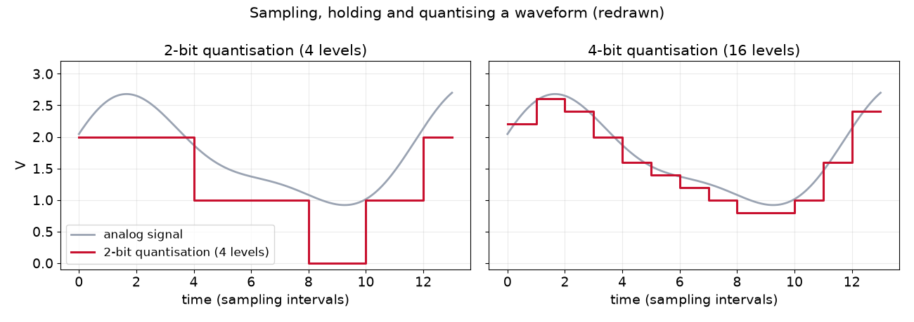
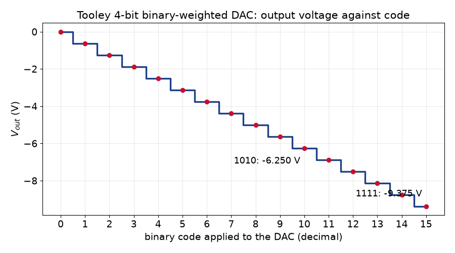
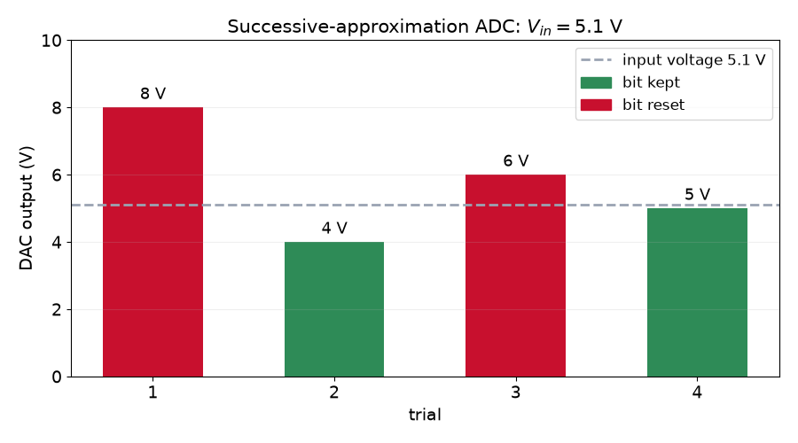

How a digital computer takes analogue signals from sensors and recreates analogue signals: sampling, quantisation, binary-weighted and R-2R DACs, four ADC types and fault testing. Built from Tooley Chapter 3 and Floyd Chapter 12 (no lecturer slides).
CO/CLO: CO4no lecturer slides (built from the books)Questions: 109 (38 original)
Không có slide của giảng viên cho mục này (dựng từ sách) · Tooley Ch.3 (tr.39-52) · Floyd Ch.12 §12-1 đến 12-3 (tr.698-722) · Book content map
Book mapping of this module
Tooley: Ch.3 Data conversion (p.39-52): analogue and digital signals, quantising, binary-weighted and R-2R DACs, flash, successive approximation, ramp and dual-slope ADCs; 13 MCQs (key A.3, p.377)
Floyd: Ch.12 Signal Conversion and Processing, sections 12-1 to 12-3 (p.698-722): sampling, Nyquist, aliasing, quantization, flash, dual-slope, successive-approximation and sigma-delta ADCs, binary-weighted and R/2R DACs, performance and testing. Sections 12-4, 12-5 (DSP) only mentioned.
The two books match well: Tooley goes from quantising to five converter types with 13 multiple-choice questions; Floyd adds sampling, Nyquist, aliasing, sigma-delta, DAC/ADC specifications and tests, with True/False, Self-Test and odd problems with printed answers. There are no lecturer slides for this content.
A computer understands only bits, so real signals must be sampled and quantised
Analogue and digital signals; ADC and DAC
Sampling, holding, the Nyquist theorem
Aliasing and the anti-aliasing filter
Quantisation and the number of bits
Real signals are analogue and digital, so two conversions are needed: ADC and DAC
Real signals exist in digital (on/off) and analogue (continuously variable) forms. Digital and computer systems must accept and produce both: the ADC converts analogue to digital, the DAC converts digital to analogue.
Logic 1 is often about +5 V and logic 0 is 0 V (Tooley; the real levels depend on the logic family, see Module 02).
An ADC has one analogue input and 8, 10, 12 or 16 digital outputs; a DAC has digital inputs and one analogue output.
Signals from sensors (pressure, temperature, position) are analogue; a computer works only with bits. The ADC is the translator on the way in, the DAC the translator on the way out.
Sampling and holding turn a continuous signal into discrete values in time
Sampling takes enough discrete values on a waveform to define its shape. Then holding keeps each level constant until the next sample so the ADC has time to process it, giving a staircase.
Sampling theorem (Nyquist)
$$f_{sample}\geq 2\,f_{a(max)}$$
f_{sample}sampling frequency
f_{a(max)}highest frequency component of the signal (the Nyquist frequency)
In practice choose more than twice.
Floyd §12-1 pp.698-701; Equation 12-1📖 Explanation for beginners
Picture photographing a bouncing ball: one photo tells nothing about the path, two tell little, four begin to show the trajectory (Floyd Figure 12-2). Floyd's PDF text layer loses the greater-or-equal sign in Equation 12-1; the page image confirms it.
Sampling slower than twice the signal frequency makes spectra overlap and creates a false signal
Every signal except a pure sine wave contains harmonics. A component above the Nyquist frequency overlaps the spectrum of the sampling pulses and appears as a false low-frequency signal: aliasing (Floyd Figures 12-3, 12-4).
Remedy: put a low-pass anti-aliasing filter before the sampling circuit, or raise the sampling frequency (limited by the ADC).
Digital audio samples at 32, 44.1 or 48 kHz; a CD at 44.1 kHz captures up to about 22 kHz, above the 20 kHz usual for audio equipment.
Floyd §12-1 pp.699-700; Figures 12-3, 12-4📖 Explanation for beginners
A 5 kHz sine wave sampled at 8 kHz appears as a 3 kHz wave after reconstruction ($|f_s-f|=3$ kHz): that is an alias. This is the standard result for a sine wave; Floyd only describes it through the spectrum.
Quantisation assigns each sample to a discrete level: more bits follow the signal more closely
Quantisation assigns a binary code to each sampled value. Floyd rounds down to the lower level; the figure compares 2 bits (4 levels) with 4 bits (16 levels).

redrawn after Floyd Figures 12-7 to 12-10
Real ADCs use 12 to 24 bits (Floyd). Tooley illustrates with a 4-bit bipolar ADC: 16 levels, two's complement, MSB = 1 is negative (Figure 3.3).
Tooley Figure 3.2: 9.9 V becomes level 10, code 1010.
Tooley §3.1 pp.40-42; Floyd §12-1 pp.701-703📖 Explanation for beginners
Each extra bit doubles the number of levels ($2^n$) and halves the step. With n bits there are $2^n-1$ steps from the lowest to the highest level.
PART 2/5
02
A DAC adds currents weighted in binary to make the output voltage
Binary-weighted DAC and its output table
Why the R-2R ladder is more practical
Resolution and accuracy
The output filter
A binary-weighted DAC uses R, 2R, 4R, 8R to give each bit its own gain
An inverting summing amplifier with feedback resistor $R$ and input resistors $R, 2R, 4R, 8R$ gives bit 3 (MSB) a gain of $-1$, bit 2 $-0.5$, bit 1 $-0.25$ and bit 0 (LSB) $-0.125$.
Tooley example: code 1010 gives $V_{out}=-5-1.25=-6.25$ V; code 1111 gives $-9.375$ V; each code step is $-0.625$ V.

redrawn after Tooley Table 3.2Tooley §3.2 pp.41-43; Figure 3.6a; Tables 3.1, 3.2📖 Explanation for beginners
Each "1" bit contributes a current inversely proportional to its resistor; $R_f$ adds the currents into a voltage. The sign is negative because the op-amp is inverting; add another inverting stage for a positive voltage. Tooley says "eight possible states" for Table 3.2 but the table has 16 codes (4 bits).
Analogue switches and a precise reference improve the DAC, but the resistor range is still too wide
The improved version replaces the data latch with four analogue switches that connect each input to the reference voltage $V_{ref}$ (bit = 1) or 0 V. The reference is more accurate and stable than a logic level, and can be negative so $V_{out}$ is positive (typically $\pm5$ V, $\pm10$ V).
But a 10-bit DAC with $R=1$ kΩ needs resistors from 1 kΩ to 512 kΩ, all to 1 % or better. Floyd: 8 bits need R to 128R at better than 0.5 %, hard to mass-produce.
The problem is matching resistors on a chip: keeping the relative error small between 1 kΩ and 512 kΩ is hard. The R-2R ladder solves this.
The R-2R ladder needs only two resistor values, so it is easy to make and match
Only $R$ and $2R$ are needed (any values, provided one is double the other). Thevenin analysis (Floyd Figure 12-30), with high level +5 V and $R_f=2R$:
Code
D3
D2
D1
D0
Only one bit = 1
1000 → −5 V
0100 → −2.5 V
0010 → −1.25 V
0001 → −0.625 V
Each lower bit halves the output voltage, so $V_{out}$ is proportional to the binary weight.
This site checked it by solving the ladder's node equations (numpy) and comparing with the closed form for all 16 codes: they agree.
Resolution depends only on the bit count; accuracy depends on resistors and the reference
Two different concepts (Tooley 3.2.1, Floyd 12-3):
Resolution: the number of output levels or steps. An n-bit DAC has $2^n$ levels and $2^n-1$ steps; Floyd computes resolution as one part in $2^n-1$.
Accuracy: the difference from the expected output, as a percentage of full scale; cheap DACs reach 1 % to 2 %; ideally no worse than ±½ LSB.
Resolution of an n-bit DAC
$$\text{resolution}=\dfrac{1}{2^n-1}\times100\%$$
n
4
8
12
16
Resolution
6.67 %
0.392 %
0.0244 %
0.00153 %
A low-pass filter at the output smooths the steps (Tooley 3.2.2).
Tooley §3.2.1-3.2.2 p.45; Floyd §12-3 p.720, Example 12-4📖 Explanation for beginners
Example: an 8-bit DAC has 256 levels but Floyd's resolution is $100/255=0.392\%$; a 10 V DAC with ±0.1 % accuracy has a maximum error of $10\times0.001=10$ mV.
PART 3/5
03
Four ADC types trade speed against accuracy and simplicity
Flash: fastest, many comparators
Successive approximation: n steps, fixed time
Ramp and dual slope: accurate, slow
Sigma-delta and the comparison table
A flash ADC compares with every reference at once, so it is fastest but needs $2^n-1$ comparators
A voltage divider sets each comparator's reference; the comparators whose reference is below the input output 1; the priority encoder gives the code of the highest 1 input (Tooley Figure 3.9; Floyd Figure 12-12).
Input $V_{in}$
Bits 2 1 0
< 0.5 V
000
0.5 to 1.5 V
001
1.5 to 2.5 V
010
2.5 to 3.5 V
011
3.5 to 4.5 V
100
4.5 to 5.5 V
101
5.5 to 6.5 V
110
> 6.5 V
111
Tooley example: with 2 V in, IC1 and IC2 go to 1, code 010. 3 bits need 7 comparators, 4 bits 15, 8 bits 255 (Tooley says 256 in round numbers; 10 bits: 1,023, Tooley says 1,024). Typical time 50 ns to 1 µs.
This is the ADC for very fast signals, but it is expensive. The book does not define the boundary case (exactly 0.5 V, 1.5 V...).
A successive-approximation ADC tries each bit from the MSB, so it always takes n steps: faster than ramp, slower than flash
It consists of a DAC, a successive-approximation register (SAR) and one comparator. Each step turns on one bit (from the MSB) and compares the DAC output with $V_{in}$: if the DAC is greater the bit is reset, if smaller the bit is kept. Floyd example, DAC weights 8, 4, 2, 1 V, input 5.1 V:

redrawn after Floyd Figure 12-18
8 V reset, 4 V kept, 6 V reset, 5 V kept: code 0101. The conversion time is fixed (from the SC to the EOC signal), typically 10 to 100 µs. ADC0804 (8 bit): eight comparisons, 64 clock periods.
Like a number-guessing game by halving: each try removes half of the remaining range. n bits need n comparisons.
Ramp and dual-slope ADCs turn voltage into a counted time: accurate and noise-rejecting but slow
Ramp: a ramp generator, one comparator and a gate that passes clock pulses to a counter until the ramp exceeds $V_{in}$; the pulse count represents $V_{in}$ (Tooley Figures 3.11, 3.12).
Dual slope: the rising ramp has a slope that depends on $V_{in}$ for a fixed time, then a falling ramp of fixed slope returns to 0 V; the discharge time is proportional to $V_{in}$ (Tooley Figure 3.13, Floyd Figure 12-16). High accuracy, noise rejection, used in digital voltmeters; 500 µs to 20 ms.
Tooley §3.3 pp.48-50, Figures 3.11 to 3.13; Floyd §12-2 pp.707-709, Figures 12-15, 12-16📖 Explanation for beginners
In Tooley's example (Figure 3.13) the rising ramp counts 7 pulses and the falling ramp counts 5.
Sigma-delta quantises the difference between samples with 1 bit and is common in telecom audio
Based on delta modulation: it quantises the increase or decrease between successive samples, 1 bit at a time; the output is a 1-bit stream where the count of 1s over an interval gives the amplitude (the most 1s is the positive maximum, half is zero, none is the negative maximum). A counter turns the stream into n-bit codes (Floyd 12-2, Figures 12-20 to 12-22).
ADC type
Speed
Typical time
Features
Flash
fastest
50 ns to 1 µs
$2^n-1$ comparators, costly
Successive approximation
medium
10 to 100 µs
n steps, fixed time, cheap
Dual slope
slow
500 µs to 20 ms
accurate, noise rejecting
Sigma-delta
by design
not stated in the book
1-bit stream, telecom audio
Floyd §12-2 pp.711-713; Tooley §3.3 pp.46-48📖 Explanation for beginners
Floyd example: 4096 ones during the interval at positive maximum, 2048 at zero, none at negative maximum.
PART 4/5
04
Test a converter with a ramp to find missing codes, wrong codes, reversals and offset
Testing an ADC with a DAC at its output
Three ADC faults
Four DAC faults
From the fault shape to the failed part
The standard test feeds a ramp to the ADC, converts the codes back with a DAC and compares the two ramps
Feed the ADC a linear ramp, pass the output codes through a good DAC to get a staircase and compare it with the input ramp (Floyd Figure 12-23). Three common faults (Figure 12-24):
Missing code: one step of the staircase is skipped, for example no code 1001 or 0011.
Incorrect codes: several codes are wrong, for example one bit line stuck at a level.
Offset: the ADC reads the input voltage as greater than its true value.
Floyd example 12-4: a 4-bit flash ADC misses code 0011, most likely comparator 3 is stuck LOW.
Floyd §12-2 pp.713-715, Figures 12-23 to 12-25📖 Explanation for beginners
The shape of the staircase tells the fault: a missing step, wrong steps, or the whole line shifted.
A DAC has four typical faults: nonmonotonic, differential nonlinearity, wrong gain and offset
Test a DAC by applying the codes from 0 to $2^n-1$ in increasing order and watching the output staircase (Floyd Figures 12-31, 12-32):
Nonmonotonic: there are reverse steps; for example bit 1 is always 0 or stuck at 1.
Differential nonlinearity: some steps are smaller or larger than normal (for example a faulty bit resistor).
Low or high gain: every step is smaller or larger than ideal (for example a wrong feedback resistor).
Offset: code 0000 gives a non-zero voltage, the same amount at every step (possibly a faulty op-amp).
Other specifications: monotonicity (no reverse steps), settling time (to within ±½ LSB of the final value).
Floyd §12-3 pp.719-722, Figures 12-31, 12-32📖 Explanation for beginners
Floyd example: the output sequence 0010, 0011, 0010, 0011, 0110... shows bit 1 stuck HIGH. Check that bit's input pin: if it changes state the fault is inside the DAC; if it is always HIGH look for a short to +V.
PART 5/5
05
Converters sit between sensor and digital processor, and the processing chain has a fixed order
The digital signal processing chain
Worked choices: bits and speed
Limits of this module
The digital processing chain has a fixed order: anti-aliasing, sample-and-hold, ADC, processor, DAC, reconstruction filter
Floyd summarises: a digital signal processing system consists of an anti-aliasing filter, a sample-and-hold circuit, an ADC, a digital signal processor (DSP), a DAC and a reconstruction filter (post-filter) that smooths the DAC steps.
Low-pass filter before sampling (removes frequencies above Nyquist).
Sample and hold.
The ADC turns samples into codes.
The processor works on the codes.
The DAC turns codes back into a staircase.
The reconstruction filter smooths it.
Floyd §12-4 pp.724-725 and the chapter summary p.731📖 Explanation for beginners
This module does not go into DSP architecture (Floyd 12-5: Harvard, pipeline, TMS320C6000); that section is outside the scope here.
Choose the bits from the resolution you need and the top signal frequency from the conversion time
Two typical calculations (set by this site, using the formulas above):
Bits: need a resolution better than 0.1 %: $100/(2^n-1)<0.1$ gives $n=10$ ($0.0978\%$), since $n=9$ reaches only $0.196\%$.
Speed: an ADC takes 10 µs per conversion, sampling continuously: $f_s=100$ kS/s, so the top signal frequency is $f_{a(max)}=f_s/2=50$ kHz.
The assumption "samples continuously at its maximum rate, throughput equal to 1/conversion time" belongs to the calculation, not to the book; Floyd defines throughput as the sampling rate an ADC can handle.
Floyd §12-1, 12-2, 12-3 (the formulas); Tooley §3.3 (conversion times)📖 Explanation for beginners
In short: a faster converter allows a wider signal; more bits give better resolution but do not make it faster.
Detailed notes
Five worked examples
Example · Example 1: output of the weighted DAC (Tooley)
Code 1011 goes into Tooley's DAC of Figure 3.6a (logic 1 = +5 V). $V_{out}=-5(1+0+0.25+0.125)=-6.875$ V, also $-0.625\times11$.
Result (checked by program): -6.875 V
Example · Example 2: the R-2R ladder (Floyd)
Code 1010 into the R-2R ladder, +5 V, $R_f=2R$: $V_{out}=-5(1+0+\tfrac14+0)=-6.25$ V.
Result (checked by program): -6.25 V
Example · Example 3: successive-approximation ADC
4 bits, weights 8, 4, 2, 1 V, input 11.7 V: try 8 V keep, +4 V = 12 V reset, +2 V = 10 V keep, +1 V = 11 V keep: code 1011.
Result (checked by program): 1011
Example · Example 4: comparators and resolution
A 6-bit flash ADC needs $2^6-1=63$ comparators; a 6-bit DAC has a resolution of $100/63=1.587\%$.
Result (checked by program): 63; 1.587 %
Example · Example 5: sampling speech
Speech contains frequencies up to about 10 kHz so at least 20 kHz is needed; if only up to 4 kHz is kept, at least 8 kHz suffices and voice stays understandable (Floyd 12-1).
Result (checked by program): 20 kHz; 8 kHz
Source mapping
The module has no lecturer slides. Tooley Ch.3 (pp.39 to 52, 13 multiple-choice questions, key A.3 read from the scanned image). Floyd Ch.12 sections 12-1 to 12-3 (pp.698 to 722). Floyd 12-4 and 12-5 (digital signal processing, DSP) are only mentioned briefly, not covered in depth.
Tooley 3.2 (Table 3.2) says "eight possible input states" for a 4-bit DAC, but the table has 16 codes (0000 to 1111) and $V_{out}$ from 0 V to −9.375 V.
Tooley 3.3 says an 8-bit flash ADC needs 256 comparators and 10 bits need 1,024; the exact counts are $2^n-1$ = 255 and 1,023 (Floyd 12-2 gives the formula). Figure 3.9 (3 bits, 7 comparators) is right.
Tooley Chapter 3 question 11: the key prints (b) "binary-weighted" while the text of 3.3 says the DAC of a successive-approximation ADC is "usually based on an R-2R ladder". The site keeps key (b) because the R-2R ladder produces binary-weighted currents and the other two options are not DAC types.
Tooley Chapter 3 question 10: the OCR layer reads "50 ns to 1 ps"; the page image and key (a) show the unit is the microsecond (1 µs).
Floyd Chapter 12 True/False 6 prints "Successful approximation" (it should be successive); the printed key is F. The site marks it as a typo.
Floyd Chapter 12 Problem 19(b): the printed answer is 3.22 %; the exact value $100/31=3.2258\%$ rounds to 3.23 % (the book truncates). Part (c) prints 0.024 % (exact 0.0244 %).
Floyd Chapter 12 Problem 7: the printed answer is 200 (magnitude); the circuit is inverting so the signed gain is −200. Problem 9 prints −33.
Floyd Chapter 12 Problems 25 and 27: the printed answers in the appendix (A-27) do not match the questions (Problem 25 asks the purpose of an ADC but the answer describes a DAC; Problem 27 asks how many instructions per second a 600 MHz C64xx delivers but the printed answer is 18.75 million instructions/s). Both belong to the DSP part so they are not in the bank.
Floyd Chapter 12 Problems 13, 14 (successive approximation "maximum ladder output +8 V") and 16 ("lowest-weighted resistor"): the wording is ambiguous about which weight and which resistor, so they are not in the bank; Problem 13 has a printed answer "11, 11, 11" that the question does not explain.
Floyd 12-3: DAC resolution is one part in $2^n-1$ (6.67 % for 4 bits) but the LSB of an 8-bit DAC is said to be 0.39 % of full scale ($100/256$): two different bases in the same section. The site uses $2^n-1$ for "resolution" and does not ask about "LSB as a percentage".
Floyd's PDF text layer loses comparison and minus signs (for example Equation 12-1 shows "fsample + 2fa(max)", "conversion time of 100 ms" instead of 100 µs). Formulas and numbers in the module were rechecked on page images or by computation.
Neither Tooley 3.1 nor Floyd 12-1 gives an alias-frequency formula; the example of 5 kHz sampled at 8 kHz becoming 3 kHz is the standard result for a sine wave computed by this site.
Tooley Chapter 3 opens by promising to "show later how data conversion devices are used in some practical aircraft systems" but the chapter has no separate aircraft example. The module gives no aircraft example because no source was read.